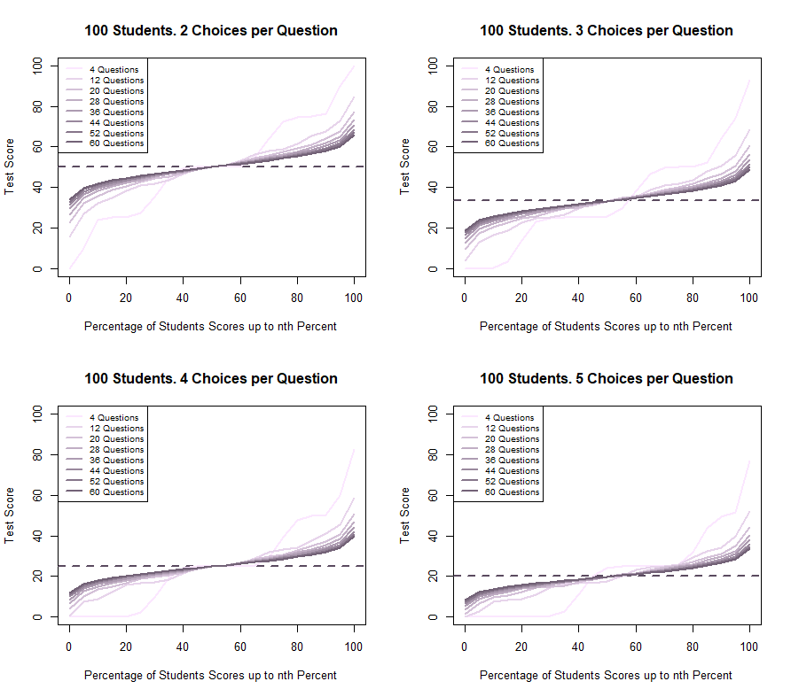

How Well Does Randomly Guessing Work?
Every student has been told that whenever they get stuck on a multiple choice question, they should make a guess since the probability of getting the right answer when guessing is higher than when not answering at all. This is certainly true! However, how well does this guessing method work? How does it change in response to different exams? How well will their score compare to another student who had a better idea of what answer to pick? Here is an analysis of how this works in different scenarios. (Note: Assume all exams to be completely multiple choice and have the same number of choices for each question).
Let’s say there’s a teacher of an advanced college course with 100 students. The students are given an exam with 28 multiple choice questions with 3 choices each. After calculating the test scores, the teacher finds there to be too many students doing well on the exam. So the teacher decides that the exam is too easy for the students. However, the exam can’t be made too hard, so the teacher rationalizes that making the exam very short with only 4 questions with 5 choices each and increasing the question difficulty will make it more difficult for too many students to get A’s. After calculating the test scores, the teacher finds that there are less students getting A’s and concludes that the exam difficulty and format is appropriate for the course.
How does randomly guessing on these two exams compare? It may feel intuitive to say that a student will be more likely to score higher in the second exam, but in fact it actually decreased for the second exam as there are more choices per question. However, how would randomly guessing on these two exams compare if they both had the same number of choices per question instead? On average, there isn’t much difference in what students could score on either exams… But the variation in possible test scores decreases as the number of test questions increase (i.e. Central Limit Theorem). So, if the whole class guessed their way through both exams, then we should see roughly similar average scores for the whole class. This tells us that if a lot of students got A’s on the first exam, then there is some combination of it either being a little too easy, and students studied and were fairly prepared for it. Since the scores dropped in exam 2 this would mean that either students did not study as well and weren’t prepared, or the exam difficulty was too high. In either case, it is more likely that students had to resort to randomly guessing due to not knowing the material well enough.
One important change between the exams is the number of questions coupled with increasing content difficulty. The reduction in test questions introduced more variability in possible test scores for students who may have to resort to random guessing. For the student, the increased variability brings the opportunity to score very well or very poorly or somewhere in between (i.e. if you are asked one question and randomly guess, then you can either score 0% or 100%. If you are asked 100 questions and randomly guess, then there are many more possible scores but within a smaller interval around the expected value of the average score). However, how would random guessing scores compare to the scores of students who prepared for the exam? If a student put in 30 hours of studying and scored 50% (2 out of 4) on the second exam, then how would this compare to the potential score of a student who didn’t study at all and randomly guessed? The increased variability in possible random guessing scores, will actually make this situation more common especially with higher difficulty level questions.
Here are some plots and a statistics table created from a monte carlo estimation of these potential random guessing scores in different scenarios (i.e. number of questions, number of choices per question). You can see the effect of the Central Limit Theorem as the plotted lines approach the theoretical average value. Designing a multiple choice exam with this effect in mind will likely separate the probabilities of higher scores between student’s randomly guessing and studying sufficiently. This separation in chance can manipulated alongside the adjustment of the exam difficulty level to reward students more for those studied for it rather than those who simply guess randomly.

This table is drawn from the simulation of 100 students answering questions with 3 choices. As we can see here like in the plots, the chance of a student randomly guessing and getting a high score drops as the number of questions increases. This happens because of the Central Limit Theorem, which states that if there’s a population (i.e. score of test questions) with a mean and standard deviation, then with increasingly large sample sizes (i.e. number of test questions), the sample means will approximate to the normal distribution. We see the effect of the CLT in this simulation through the decrease of the SD as the number of test questions increase.
Note: These statistics are monte carlo estimates, so we would observe these values on average. For example, if we gave the same test of 4 questions to 10 different classes, we would observe an average maximum (i.e. the average of the maximum scores from each class), which would approximate the maximum value shown in the table (92.96%).
| Number of Questions | Minimum | 25% | Median | 75% | Maximum | Mean | SD |
|---|---|---|---|---|---|---|---|
| 4 Questions | 0.00 | 22.87 | 25.77 | 49.98 | 92.96 | 33.29 | 23.52 |
| 12 Questions | 3.90 | 24.73 | 33.25 | 41.87 | 68.67 | 33.34 | 13.57 |
| 20 Questions | 9.30 | 25.80 | 33.28 | 40.12 | 60.60 | 33.32 | 10.50 |
| 28 Questions | 12.57 | 27.41 | 32.99 | 39.21 | 56.39 | 33.35 | 8.89 |
| 36 Questions | 14.77 | 27.97 | 33.20 | 38.47 | 53.65 | 33.31 | 7.84 |
| 44 Questions | 16.42 | 28.56 | 33.23 | 38.01 | 51.63 | 33.33 | 7.09 |
| 52 Questions | 17.64 | 28.91 | 33.21 | 37.63 | 50.18 | 33.33 | 6.53 |
| 60 Questions | 18.73 | 29.24 | 33.24 | 37.33 | 48.92 | 33.33 | 6.06 |
So, if you are a student, then try your best to study your material as much as possible because more often than not, the chances of getting a better score is higher when you know the answer:) However, sometimes you just have to guess, and the risks/rewards are greater the less questions there are.
If you are a teacher, then you can use this phenomenon to design your exams to the appropriate difficulty level, while rewarding the students who study for your exams rather than those who randomly guess their way through your exams! :)